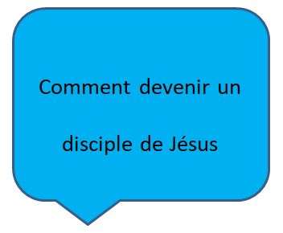

La Fin de l'Histoire (l'Apocalypse)
Peu importe ce que nous pouvons faire face à des essais dans le cadre d'un Chrétien, nous avons la très grande assurance de savoir que Dieu est en contrôle de l'histoire. Il connaît la fin de l'histoire, et cela est toujours une source de joie.
Le Livre de l'Apocalypse
Le livre de l'Apocalypse est l'enregistrement d'une vision donnée à l'apôtre Jean, quand il vivait en exil sur l'île Grecque de Patmos. Il pourrait bien être le livre le plus difficile de la Bible à lire. Apocalypse a été écrit dans une époque de grande persécution contre les Chrétiens; de nombreux chercheurs pensent qu'il pu avoir été écrit par une sorte de code qui aurait bien été compris par les lecteurs chrétiens de l'époque de Jean. Certains croient que la plupart, sinon la totalité, des visions décrites dans l'Apocalypse ont déjà été remplies.
Même si il est difficile de comprendre une partie du symbolisme et de l'imagerie dans l'Apocalypse, vous devriez la lire au moins une fois. Apocalypse 1:3 promet une bénédiction pour ceux qui la lisent. Les lettres aux sept églises ont encore beaucoup à dire à l'église modern (Apocalypse 2-3). Et, si vous avez fait une lecture dans les prophètes de l'Ancien Testament, vous trouverez les similitudes entre les styles d'écriture très intéressant
Si nous lisons rien d'autre dans l'Apocalypse, nous devrions au moins lire le dernier chapitre, le chapitre 22. Dans ce document, nous pouvons trouver beaucoup d'éspoir dans ce qui nous attend quand nous irons à notre maison dans le ciel.
